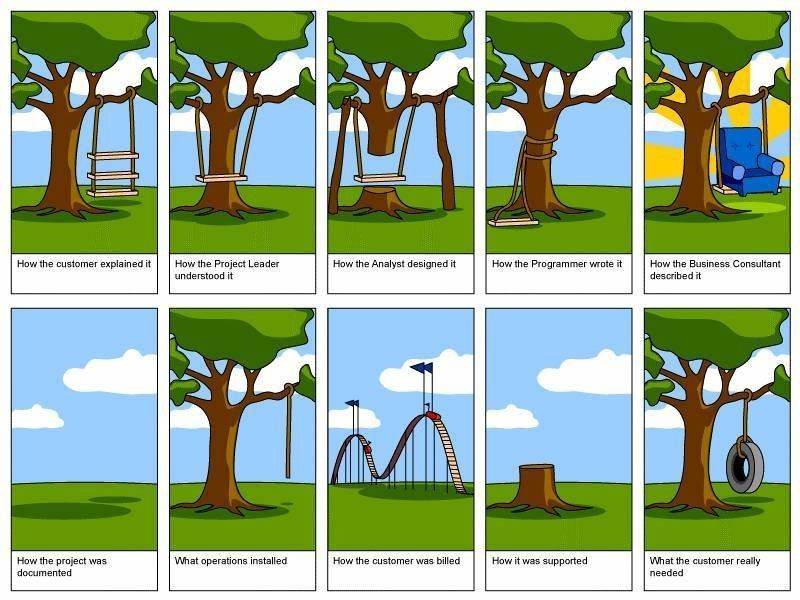
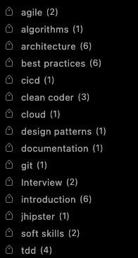
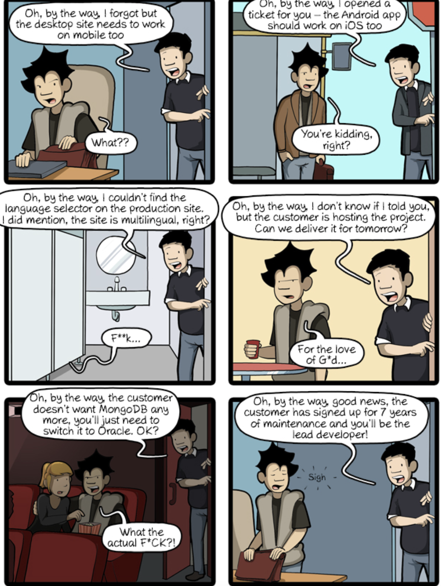
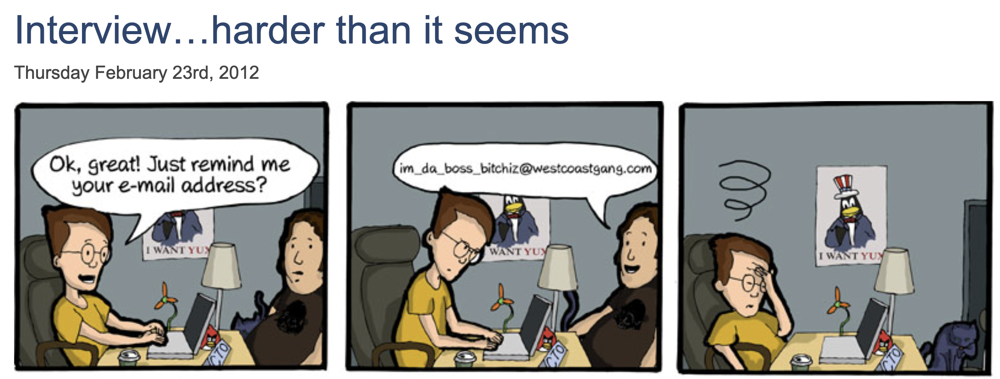

Advanced Software Engineering
Einführung
Yuqiu (Yuchew - chew like in chewing gum) üëã
Profil
Vorstellungsrunde
Erwartung und Fragen bzgl. Softwareentwicklung
Meine Motivation
Methoden, Prinzipien erlernen
- Kein auswendig lernen: stick to the process
- Lernen aus Projekterfahrungen
- Mindset: Ich will das verstehen
übertrieben oder die Realität ?
Software engineer interns on their first day be like...Lebenlanges Lernen
Definition: SOFTware
Soft ≠ Hard
Arten von Software

Kapitel:
- git
- agile development principles
- clean coder
- QA
- architecture: arc42
- jhipster
- soft skills
- cicd
- best practices
Referenzen:
- monkeyuser.com
- arc42 Schulung (isaqb)
- medium
- clean code (uncle bob)
- youtube
- https://www.commitstrip.com/
- https://blog.codecentric.de/en/2019/06/test-driven-development-theory-practice/
GIT
Git Befehle
feature branching workflow
trunk based development


von Wasserfall nach Agile


build POC!


- Uncle Bob Beispiel
- Schön angefangen, aber sich immer verschlechtert
- So wie es sein soll


agile development principles
Flaccid Scrum - Martin Fowler
Every piece of code should be tested !
???
???
Wieso ist es kein best practice ?
Häufig...

- who are we: software developers.
- what we do: we create bugs.
- what do we do then: we fix them, and create some more !
TDD
The Three Rules of TDD
- Write production code only to pass a failing unit test.
- Write no more of a unit test than sufficient to fail (compilation failures are failures).
- Write no more production code than necessary to pass the one failing unit test.
Programm 25.02.2022
- TDD abschließen
- Pair Programming
- Test pyramide
- Unit
- Integration (mockmvc)
- UI-Test (Cypress)
- Refactoring
- technical debt
- XP Practices
Weniger TrailAndError
Weniger Debugging
Keine Ausrede mehr: wir hatten keine Zeit, um Tests zu schreiben ;)
Wozu Pair Programming ?


Be humble, be stupid
Know what you know. Know what you don't know
Langfristig...
Integrationstests
Refactoring

Refactoring-Techniken

Refactoring Cliche

Technische Schulden
Extreme Programming Prinzipien

Programm 04.03.2022
- JHipster
- nützliche Ressourcen und Weiterentwicklung
- Schätzen oder nicht schätzen
- Schätzen
- Bug Tickets nicht schätzen
- Nicht schätzen
- clean code
- SOLID Gruppenarbeit
- QA
- Retro
JHipster
nützliche Ressourcen für Developers
Mehrwert von Schätzen
Refinement

Ist manchmal schwierig
Besonders schwierig bei Bugs

Aber Schätzen ist wichtig für Projektmanagement
clean coder
Clean code always looks like it was written by someone who cares.
Clean code is a discipline.
Clean code
is a culture,
is a belief,
is like taking an oath to be like a POTUS, a lawyer, a supreme court judge.
interessante Beispiele
/**
* Current device settings
*/
public settings: IDeviceSettings;
/**
* If it is an iOS device
*/
public isIos: boolean;
/**
* When component gets destroyed
*/
public ngOnDestroy(): void {
this.resetMap();
}
// TODO -> don't do
export interface Location {
adress: string;
coordinates: Coordinates;
}
return quotationMap.values()
.stream()
.collect(Collectors.toList());private RegionwiseRatingMetric calculateRatingMetric(List<BusinessImpactMetrics> list) {
var regionwiseRatingMetric = new RegionwiseRatingMetric();
regionwiseRatingMetric.setRatingsByRegions(list.stream()
.map(BusinessImpactMetrics::getRegionwiseRatingMetric)
.map(RegionwiseRatingMetric::getRatingsByRegions).flatMap(List::stream)
.collect(Collectors
.collectingAndThen(Collectors
.groupingBy(RegionwiseRatingMetric.RatingsByRegion::getRegion), map -> map
.entrySet().stream()
.collect(Collectors
.toMap(Map.Entry::getKey,
entry -> entry
.getValue().stream()
.map(RegionwiseRatingMetric.RatingsByRegion::getRatingDetails)
.flatMap(List::stream)
.collect(Collectors
.groupingBy(RegionwiseRatingMetric.RatingDetail::getRating,
Collectors
.summingInt(RegionwiseRatingMetric.RatingDetail::getCount)))
))
.entrySet().stream().map(this::createRatingByRegion)
.collect(Collectors.toList()))));
return regionwiseRatingMetric;
}
clean code Pattern 4,6,7,8
Wann setzen wir welche Framework / Programmiersprachen ein ?
QA


Programm 11.03.2022
- architecture
- wozu Architektur
- Arc42
- Interviews
- Erfahrung
- Cracking the coding Interview
- Gruppenarbeit
architecture
Die Schildkröte vs der Hase

Was ist Software Architektur ?

"alte" Docus
- nicht vorhanden, veraltet, doppelt
- chaotisch
- viel zu viel: z.B. Pflichtenheft, Lastenheft
- painful
Wieso Arc42
painless documentation- lean, lightweight
- strukturiert, alles was man braucht
- verständlich
- wartbar
Was muss ein Architekt können? t-shaped

Auswahl von Werkzeugen müssen begründet werden

Externe Schnittstellen ?!

aktiv nach wichtigen Anforderungen fragen
Anforderungen mit konkreten Beispielen beschreiben
Die App muss auf einem mobilen Browser in weniger als 7 Tage programmiert und getestet werden können
Mit Kunden kommunizieren
und dann schriftlich festhalten (Meeting minutes)
besonders wenn konkurrierende Anforderungen abgewägt werden müssen
Änderbarkeit vs Robustheit vs Performance
Muss man denn alles dokumentieren ?
nein! das wichtigste mit prägnanter Sprache
häufig ändernde Sachen bewusst leer lassen / verweisen
Baupläne für Häuser / Wohnungen
- Grundbuchauszug
- Baubeschreibung
- Flurkarte, Teilungserklärung
- Grundriss, Wohnflächenberechnung
- Energieausweis
- Elektroplan
- Wirtschaftsplan (teilweise nur bei Wohnungen)
Architekturpläne für Software: Arc42
- Kontext
- Laufzeitsicht
- Verteilungssicht
- Bausteinsicht
- Liste von Requirements
- Liste von Qualitätsanforderungen
- Übergreifende Konzepte
Onboarding Template
Interviews
positive / negative Erfahrung
Cracking the coding Interview
common failures
- begins coding too early before completing data structure brainstorming and thinking about all of the steps along the way
- not using all given conditions / not understanding every detail of the problem
- using the wrong data structure
Recommended Steps
- explain a brute force asap (not code it), slow but works
- stating time and space complexity for brute force approach
- Optimize
- think about every data structure and variable you will use
- apply tdd if possible, but also follow your instinct, maybe reverse engineer it !
- explain your approach on a white paper
Recommended Steps
- explain a brute force asap (not code it), slow but works
- stating time and space complexity for brute force approach
- Optimize
- think about every data structure and variable you will use
- apply tdd if possible, but also follow your instinct, maybe reverse engineer it !
- explain your approach on a white paper

Programm 18.03.2022
- CICD
- Soft Skills
- JHipster
- Best practices
cicd via Jenkins

soft skills
How to be funny
You hate corona ? You mean corona beer ?
You didn't lock your screen, when you were away from the PC
Presentation
Konfliktmanagement
best practices
20 80 Regel